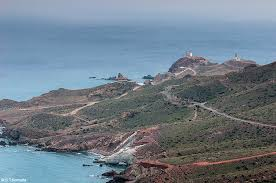

Una ruta preciosa que sale del Cabo de Gata, en Almería, desde el pueblecito de Níjar y que sigue hasta Granada. Para ello hay que cruzar un desierto, pequeño pero desierto, aunque después la brisa del mar te recompensará por ello, además de las muchas aldeas rurales que encontrarás en el camino. Lo obligatorio de esta ruta es algo en lo que todos los motoristas que la han realizado coinciden, el desierto de Tabernas, los pueblos blancos del principio de la ruta y, por supuesto, toda la zona de La Alpujarra.
